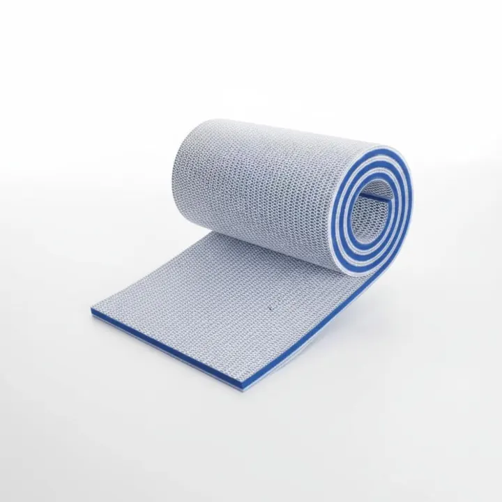
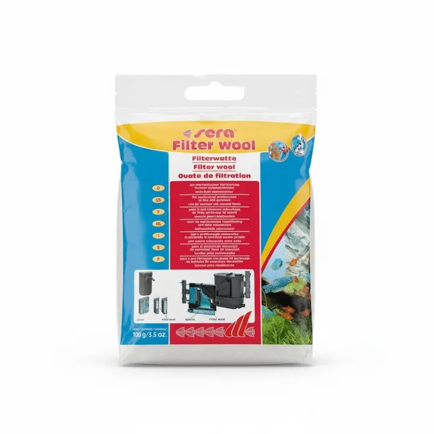

غير متوفر في اللقطة
الصورة من مجموعة أكوا هافن01 / 01
المعداتعن هذه القطعة ↓
قطن فلترة سيرا – 100 جم
قطن فلترة سيرا، وسط ترشيح ميكانيكي يُستخدم داخل الفلتر لتحسين جودة الماء ورفع كفاءة نظام الترشيح.
١٥ ر.س
غير متوفر في اللقطةسعر مرجعي للمعاينة. الطلب والدفع غير متاحين في هذه النسخة.
نظرة أقربعن هذه
عن هذه
القطعة.
الوصف والخيارات كما وردت في المجموعة المرجعية.
تفاصيل المنتج
قطن فلترة سيرا — وسط ترشيح ميكانيكي يُستخدم داخل الفلتر لتحسين جودة الماء ورفع كفاءة نظام الترشيح.
المواصفات الأساسية
- نوع الترشيح: ميكانيكي
- العلامة: Sera
- المادة: قطن فلترة
- الوزن المسجل: 100 جرام
المميزات
- يوفر مساحة أو طبقة فعالة للترشيح
- يدعم استقرار جودة الماء مع الاستخدام الصحيح
- مناسب لعدة أنواع من الفلاتر
الاستخدام والعناية
اشطف الوسط قبل الاستخدام حسب طبيعته، وضعه داخل حجرة الفلتر مع ضمان مرور الماء خلاله. تُنظف الوسائط البيولوجية بماء الحوض فقط.
ملاحظة مهمة
لا تستبدل جميع الوسائط البيولوجية دفعة واحدة حتى لا تتأثر البكتيريا النافعة.